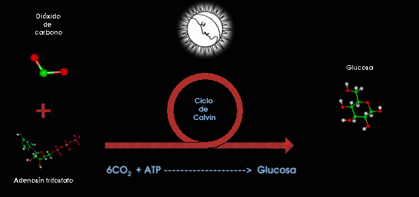

Esta fase es así llamada por no necesitar de la luz para efectuarse. Se lleva a cabo dentro de los *cloroplastos* tanto en el día como en la noche. En esta fase se utilizan los hidrógenos liberados y la energía química formada en la *fase luminosa* junto con el dióxido de carbono absorbido del medio ambiente para formar moléculas grandes de azúcar como la glucosa a y el almidón. Esta fase consiste es de construcción ,en la que gracias a la energía obtenida y ?piezas? pequeñas como el carbono obtenido del dióxido de carbono y el hidrógeno se forman grandes moléculas.
